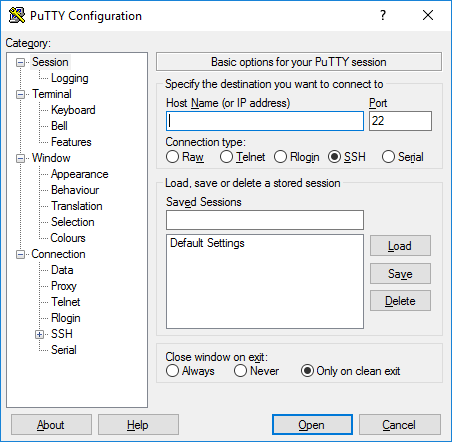

1 Week 1 Workshop A - Introduction to the shell
1.1 Learning Objectives
At the conclusion of today’s workshop students are expected to be able to:
To compare and contrast command line interfaces with graphical user interfaces
To articulate the principles of Bash programming, including the common syntax of commands
To execute common commands to solve routine problems using Bash
1.2 Working on the command line
Bioinformatic analysis is conducted using a command-line interface (CLI). This is a text-based interface that allows users to interact directly with the computers operating system by executing commands. This is in contrast with the graphical user interface (GUI) that you might be familiar with, where instructions are sent to the computer via a point-aim-click mechanism. Below is an example of how one might view the contents of a directory using a CLI (Left) and a GUI (Right). The most common shells are Bash and Zsh. These shells typically operate in Unix based operating systems. We will be using Ubuntu-based virtual machines in this course.

Shell scripting can be very useful in bioinformatics including
Reproducibility - Shell scripts can be saved and re-executed a later date. Commands executed in the shell are also saved and can be referred to at a later date.
Throughput - Many tasks in bioinformatics are repetitive. For example, if we were conducting a sequencing experiment on 100 samples and would like to trim adapters off reads we can use loops to perform this task on all sets of reads. This is much quicker than using a GUI to perform the same task.
Integration - Shell scripting allows you to integrate several programs in workflows. For example, might make a shell script that calls FastQC to inspect reads and then TrimGalore! to remove adapters. This can be done in a single script
Efficiency - Graphical user interfaces can be resource intensive. Using the shell frees resources that would usually be used for the GUI.
1.3 Connecting to your Virtual Machine
There are several important steps to connect to your virtual machine.
Mac OSX/Linux based computers
Ensure that you are connected to the Monash VPN. Instructions for connecting to the Monash VPN can be found here.
Go to the search bar and type in “terminal”. This will open your machines terminal.
To connect to your virtual machine you need to execute the following command, replacing username with your trainee username and hostname with the corresponding hostname in the google sheet:
ssh username@hostname
You will be prompted to enter your password.
You may be prompted with the following message:
Are you sure you want to continue connecting (yes/no/[fingerprint])?
Type ‘Yes’
You are now successfully connected to the VPN. You should see something similar to this:

Windows based computers
Ensure that you are connected to the Monash VPN. Instructions for connecting to the Monash VPN can be found here.
Download and install PuTTY. PuTTY is an open-source SSH client for Windows and will allow you to connect to your virtual machine.
When you open PuTTY you will be presented with the following:

In the “hostname” field, enter the hostname corresponding to your virtual machine as per the google sheet. Click the “open” button.
You will be prompted to enter a username. Enter the username that corresponds to your virtual machine. Hit enter.
You will be prompted to enter a password. Enter the password that corresponds to your virtual machine. Note: Your password will not be visible as you type it. This is normal. Hit Enter.
You should now be connected to your virtual machine.

1.5 Creating files and directories
We can create files and directories using the touch and mkdir commands. Touch will create an empty file and mkdir will create a new directory. Lets give it a try:
Exercise 4:
Within the
~/GNA5012/week_1directory, create a directory called “src”. Within this directory, create an empty file called script_1.sh
1.6 Copying, moving and deleting files
There are occasions when we want to copy, move or even delete files from the shell. This can be achieved using the cp, mv and rm functions, respectively.
- The basic syntax for
cpandmvis as follows:cp source_file target_file
Exercise 5:
Within the `
~/GNA5012/week_1`directory, create a couple of files using the touch command. Explore thecpandmvcommands by moving these files around and creating new copies. When you are done clean up the files you have created withrm.
1.7 Wild cards
Sometimes when we are performing tasks in bash we would like to identify patterns in text strings. For instance, I might have a large set of fastq files from a paired-end sequencing run. Read pairs are usually denoted by R1 and R2. I can use wild cards to identify all the R1 fastq files in a directory in a directory by using the following command
ls *R1.fastq
There are several wildcards in Bash:
| Wildcard | Description | Example | Output |
|---|---|---|---|
| * | Matches any number of characters. | ls *.pdf |
All files with the .pdf file extension |
| ? | Matches any single character. | ls sample_1.?am |
All files with an extension that starts with any character and is followed by am. Examples might include sample_1.bam or sample_1.sam |
| [] | Matches any single character within a range or set | ls sample_[123].sam |
Returns sample_1.sam, sample_2.sam, and sample_3.sam if they exist |
| {} | Expands a comma-separated list of strings or characters | ls sample_1.{sam,bam} |
Returns sample_1.sam and sample_1.bam |
Exercise 6:
Let’s try a few examples. In the
~/GNA5012/week_1/data/sequencesyou will find a set of DNA sequences in FASTA format. Each file contains a different number of sequences. FASTA files contain a descriptor line, which is indicated by the>symbol, and a line containing the sequence of nucleotides. We can use thewctool to evaluate the number of lines in a file. Use thewctool and wild-card expressions to determine the number of sequences in each file. (Hint - if you are unsure aboutwc, check out the manual usingman wc
Solution
grep ">" *.fasta | wc -l1.8 Viewing file content
There are several ways we can work with the contents of files in Bash. To view files we can leverage a suite of in-built tools, including cat, less, head and tail
| Command | Description | Use case |
|---|---|---|
cat |
This command will concatenate files and return the contents to standard output (the terminal). |
|
less |
This command will display the contents of a file in your terminal window. You can move through the file using the up and down arrows. You exit the program by typing q. |
|
head |
This command will print out the first n lines of a file. By default this is 10. Different options can be set to modify this. |
|
tail |
This command will print out the last n lines of a file. By default this is 10. Different options can be set to modify this. |
|
Exercise 7:
In the
~/GNA5012/week_1/data/vcfyou will find a large variant call file (we will learn what the contents of this file mean in later weeks). Using the commands above, explore this file. What do you think the most effective way to navigate this file?
Solution
My typical approach here is to use head and tail first to inspect the top and bottom of files and then to use less to navigate them more easily
1.9 Searching file content
Sometimes we will want to search and extract certain phrases from files. For this we can use the grep tool. grep will search for patterns in a file and return them to the terminal. The grep tool has several handy options including regular pattern matching, inverted search, and pattern counting. This is an important tool that you will use in several workflows, check out the manual to see all the relevant options.
Exercise 8:
Earlier we counted the number of sequences in each fasta file in
~/GNA5012/week_1/data/sequence. Now, usinggrepand the wildcards that you learned earlier:
Search for all sequences in the fasta files containing the string
TTG.Search for all sequences that don’t contain
TTGSearch for all sequences that contain
AAAinsequence_1.fastatosequence_5.fasta
Solution
grep 'TTG' *.fastagrep -v 'TTG' *.fastagrep 'AAA' sequence_[15].fasta
1.10 Editing files - Sed
There are two main ways we can edit files:
Interactively using tools like
nanoandvimNon-interactively using tools like
sed
Lets talk about sed first. This tool is most useful when incorporated into scripts as it can search for patterns and perform operations such as replacing the string, deleting the string and inserting characters before and after the string. The power in the tool lies in its ability to perform these operations at speed and scale. One of the most popular implementations of the sed tool is the substitute program. It follows the following syntax:
sed [OPTIONS] 'command(s)' input_file(s)
The most common applications of sed is the substitute function
- Substitute - This command can be used to replace patterns with new strings. The syntax for
sedsubstitute issed 's/old_text/new_text/g' input_file
Exercise 9: Some genome reference builds contain the
chrprefix to chromosomes, while others omit this information. Thevcffile we have provided you contains thechrprefix. Usingsedand other commands perform the following tasks:
Identify the number of variants in this file (Hint: You might consider using the
grepandwctools.Using the
sedtool, remove thechrprefix from both the header and the variant entries.
Solution
grep -v '#' HG002.vcf | wc -lsed 's/chr//g' HG002.vcf
1.11 Editing files - Nano
We can also edit files interactively, much like you’d use word or notepad on a GUI-based interface. To get started, watch this short video on how to use nano:
Exercise 10:
Let’s construct our first bash script using nano. Remember earlier we created a file called
script_1.shin the src directory. Using nano:
Open the file
Type
#!/bin/bash, this is what we call a shebang. This provides a path to the bash interpreter and should be at the top of all of your scripts.On a new line, write a line of code that uses
echotool to print out “This is my first script in GNA5012”. If you are not familar with this tool, use themantool to review the manual.Save the script and execute it by typing
bash script_1.shinto the terminal. If you get a path error, you may need to usecdto ensure you are in the right directory
Solution:
#!/bin/bash
echo 'This is my first script in GNA5012'Exercise 11:
Let’s now circle back to
sed. Usingsedsubstitute:
Replace GNA5012 with Applied Bioinformatics
Use the
>operator to save the output to a new file calledscript_2.shExecute the new script.
Solution
sed 's/GNA5012/Applied Bioinformatics/g' script_1.sh > script_2.sh